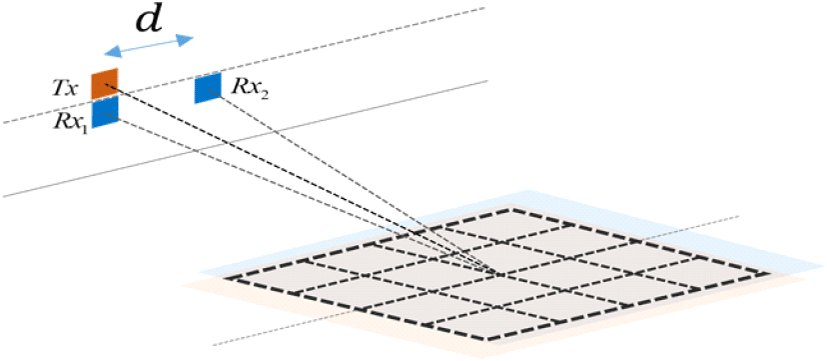

연구실적 · 국내전문학술지
YOLO 기반의 SAR을 이용한 지상 이동 표적 탐지 기법
YOLO-Based Ground Moving Target Indication in SAR Image

초록
SAR(synthetic aperture radar) 기반 이동 표적 탐지는 기상 조건과 시간에 관계없이 이동 표적 탐지가 가능해 실시간 감시가 요구되는 분야에서 중요한 역할을 하고 있다. 기존에 널리 사용되는 displaced phase center antenna나 along track interferometry 기법은 CFAR 탐지기를 통한 이동 표적 탐지 시 많은 오경보가 발생하는 단점이 존재한다. 본 논문에서는 복수의 SAR 영상의 위상 맵을 입력받아 이동 표적을 탐지하는 you only look once 모델 기반 이동 표적 탐지 기법을 제안한다. 시뮬레이션을 통해 다양한 SCNR(signal-to-clutter and noise) 조건에서의 성능을 검증하였다. 제안된 기법은 비슷한 오경보율을 가질 때 SCNR 5 dB 기준 기존 기법 대비 15 %p 이상의 탐지율 향상을 보였으며 SNCR 0 dB 이하에서는 탐지가 실패하는 기존 기법 대비 90 % 이상의 탐지율을 유지하였다.
인용
박찬울 (Chanul Park), 이호정 (Hojung Lee), 이우경 (Woo-Kyung Lee), 이성욱 (Seongwook Lee), “YOLO 기반의 SAR을 이용한 지상 이동 표적 탐지 기법”, 한국전자파학회논문지, 제36권 2호, 2025년
BibTeX
@article{Park_2025,
title={YOLO-Based Ground Moving Target Indication in SAR Image},
volume={36},
ISSN={2288-226X},
url={http://dx.doi.org/10.5515/kjkiees.2025.36.2.179},
DOI={10.5515/kjkiees.2025.36.2.179},
number={2},
journal={The Journal of Korean Institute of Electromagnetic Engineering and Science},
publisher={Korean Institute of Electromagnetic Engineering and Science},
author={Park, Chanul and Lee, Hojung and Lee, Woo-Kyung and Lee, Seongwook},
year={2025},
month=Feb,
pages={179–190}
}